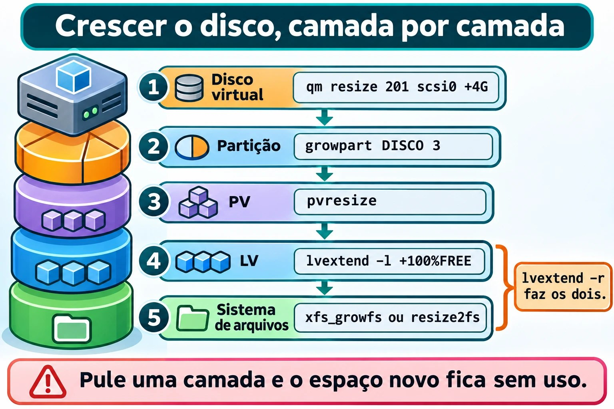
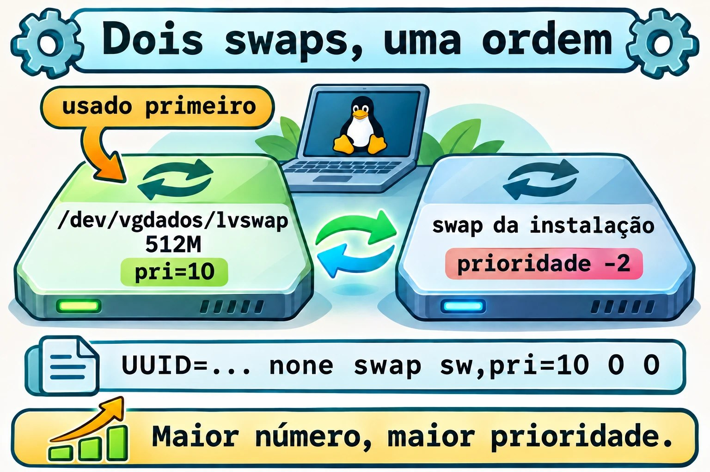
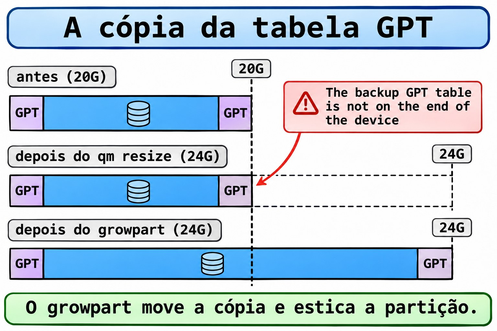

Aula 9.7 · Crescer sem destruir
No Windows, "Estender Volume" resolve quase tudo em dois cliques. No Linux, o espaço passa por camadas: disco, partição, volume físico, volume lógico e sistema de arquivos. Cada uma cresce por vez, com a máquina ligada. Nesta aula você usa o espaço livre do disco novo, cria um volume de logs e um swap extra, e aumenta o disco do sistema sem perder um byte. No fim vem o Desafio do M9: um fstab errado impede o boot.
Núcleo desta aula: usar o espaço livre com uma partição nova e
vgextend; criar LV, sistema de arquivos e swap, com entrada nofstab; e crescer o disco do sistema na ordemqm resize,growpart,pvresize,lvextend -r. O resto é aprofundamento.
| Ficha | |
|---|---|
| Módulo | M9 · Armazenamento, aula 7 de 7, com o Desafio do módulo |
| Quando | Semana 14 |
| Ao final | Você cresce discos e volumes em produção simulada e conserta um fstab que derrubou o boot |
| Pré-requisitos | Aulas 9.2, 9.4 e 9.6 |
| Tempo | cerca de 3h, mais 1h para o Desafio |
| Snapshots | m9a7-inicio e m9a7-fim na rocky-lab e na debian-lab |
1 · Aquecimento
Responda antes de ler.
- Você aumentou o disco no Proxmox, e o
df -hnão mudou. Quantas camadas faltam crescer? - Dá para encolher um disco virtual com
qm resize? - Uma linha errada no
/etc/fstabpode impedir o servidor de subir?
2 · Por que importa
| O chamado | A resposta errada | O que ela causa |
|---|---|---|
| "A raiz está quase cheia" | Apagar logs às cegas | Perde evidência |
| "Aumentei o disco e nada mudou" | Aumentar de novo no Proxmox | O disco cresce, e o sistema de arquivos continua do mesmo tamanho |
| "O servidor travou depois do reboot" | Reinstalar | Era uma linha do fstab |
| "O swap sumiu depois do reboot" | Rodar swapon toda vez | Faltou a entrada no fstab |
3 · Modelo mental
Crescer é ampliar um prédio de baixo para cima. Primeiro o terreno (o disco virtual), depois o lote cercado (a partição), o galpão (o PV, que o LVM enxerga) e a divisória (o LV). Por último, as prateleiras (o sistema de arquivos), que só usam o espaço depois de avisadas. Pular uma camada deixa o espaço novo existindo, mas sem uso.
Crescer o disco do sistema, uma camada por vez:
1. Disco virtual qm resize 201 scsi0 +4G no Proxmox
2. Partição growpart DISCO 3 até o fim do disco
3. PV pvresize PARTIÇÃO o LVM vê o espaço
4. LV lvextend -l +100%FREE pega o livre do VG
5. Sistema de arquivos xfs_growfs ou resize2fs o -r faz 4 e 5Ponte Windows
| No Windows | No Linux | Onde a comparação engana |
|---|---|---|
| Gerenciamento de Disco, "Estender Volume" | growpart + pvresize + lvextend -r | Aqui são passos separados, e você controla cada um |
diskpart, extend | lvextend -l +100%FREE | O LV pode pegar espaço de qualquer PV do grupo |
| Espaços de Armazenamento | VG com vários PVs | Mesma ideia: um pool |
| Modo de Recuperação | Modo de emergência do systemd | Pede a senha de root; a raiz pode vir só para leitura |
4 · O essencial
Unidades
O Proxmox, o fdisk, o lvextend e o df -h entendem G como GiB (1024³ bytes), e não GB (1000³). +4G no qm resize são 4 GiB.
Nova partição no espaço livre
Na 9.2 você deixou cerca de 1,5 GiB livres no scsi1 (o disco da 2.2, ampliado para 4 GB na 9.1). O fdisk cria a partição 4 ali: n (nova, aceite os padrões), t (tipo, alias lvm) e w (gravar). Antes de gravar, confirme o alvo por /dev/disk/by-id/: o sdb de hoje pode ser outro amanhã.
Do espaço ao uso
| Quero... | Comando |
|---|---|
| Transformar a partição em PV | sudo pvcreate PARTIÇÃO |
| Colocar no grupo | sudo vgextend vgdados PARTIÇÃO |
| Criar um LV de tamanho fixo | sudo lvcreate -L 1G -n lvlogs vgdados |
| Criar usando todo o livre | sudo lvcreate -l 100%FREE -n NOME VG |
| Estender LV e sistema de arquivos | sudo lvextend -r -l +100%FREE /dev/VG/LV |
| Só o sistema de arquivos | sudo xfs_growfs PONTO ou sudo resize2fs /dev/VG/LV |
O -L pede um tamanho (+1G soma), e o -l pede extensões (+100%FREE usa todo o livre). O -r (--resizefs) chama xfs_growfs no XFS e resize2fs no ext4. Sem ele, o LV cresce e o sistema de arquivos não percebe.


Swap extra
O swap é a área de disco que o kernel usa quando a RAM aperta. Um LV serve:
| Quero... | Comando |
|---|---|
| Formatar como swap | sudo mkswap /dev/vgdados/lvswap |
| Ligar agora, com prioridade | sudo swapon -p 10 /dev/vgdados/lvswap |
| Ver os swaps ativos | swapon --show |
O swap usa primeiro a área de maior prioridade (pri=); o da instalação tem -2. No fstab: UUID=... none swap sw,pri=10 0 0.


O cabeçalho GPT de reserva
Toda tabela GPT tem uma cópia no fim do disco. Quando o disco cresce, a cópia fica no meio do espaço novo, e o fdisk -l avisa: The backup GPT table is not on the end of the device. O growpart move a cópia para o novo fim e estica a partição. E o qm resize só aumenta: pense no tamanho antes.


Rocky × Debian
| Rocky | Debian | |
|---|---|---|
growpart | dnf install cloud-utils-growpart gdisk | apt install cloud-guest-utils gdisk |
| LV da raiz | /dev/rl/root (XFS) | /dev/debian-lab-vg/root (ext4) |
| Crescer a raiz | xfs_growfs, chamado pelo -r | resize2fs, online, chamado pelo -r |
| Arquivo de dispositivos do LVM | /etc/lvm/devices/system.devices: o pvcreate acrescenta o disco | lvmconfig --typeconfig full devices/use_devicesfile (o normal é 0) |
Na Rocky, um PV fora do arquivo de dispositivos fica invisível: sudo lvmdevices --adddev PARTIÇÃO.
5 · Lab guiado
Passo 0 · Backup, snapshots e pacotes. O snapshot não é backup, e hoje você mexe no disco do sistema. No Proxmox, faça um backup novo e confira:
vzdump 201 --storage PBS-LAB --mode snapshot
vzdump 202 --storage PBS-LAB --mode snapshot
pvesm list PBS-LAB --vmid 201
qm snapshot 201 m9a7-inicio
qm snapshot 202 m9a7-inicioVoltar (qm rollback) para um snapshot tirado antes da 9.6 tiraria scsi2 e scsi3 da configuração, e eles virariam unused. Na rocky-lab:
sudo dnf install -y cloud-utils-growpart gdisk
rpm -q cloud-utils-growpart gdisk
lsblk -f
sudo vgs vgdadosNa debian-lab, use sudo apt install -y cloud-guest-utils gdisk e confira com dpkg -s cloud-guest-utils gdisk | grep Status. O vgdados deve ter dois PVs, e o lvapp deve estar em /srv/app.
Passo 1 · Partição 4 no espaço livre. Na rocky-lab, defina o alvo pelo nome estável e confira, antes de gravar:
D1=/dev/disk/by-id/scsi-0QEMU_QEMU_HARDDISK_drive-scsi1
readlink -f $D1
lsblk -o NAME,SIZE,TYPE,FSTYPE,LABEL,MOUNTPOINTS $D1
sudo fdisk -l $D1O readlink -f mostra o /dev/sdX de hoje, e o lsblk deve listar só as partições 1, 2 e 3 da 9.2. Se algo não bate, pare. Só então:
sudo fdisk $D1Dentro do fdisk: n, Enter, Enter, Enter, depois t, Enter (partição 4), lvm, e w.
Created a new partition 4 of type 'Linux filesystem' and of size 1.5 GiB.
Changed type of partition 'Linux filesystem' to 'Linux LVM'.
The partition table has been altered.Depois, sudo udevadm settle e lsblk $D1: a partição 4 aparece, com cerca de 1,5G.
Passo 2 · PV e VG.
sudo pvcreate ${D1}-part4
sudo vgextend vgdados ${D1}-part4
sudo vgs vgdados
sudo pvs VG #PV #LV #SN Attr VSize VFree
vgdados 3 1 0 wz--n- <7.49g <5.49gOs valores variam por poucos MiB. O pvs mostra os três PVs: um em partição e dois em discos inteiros, e funcionam igual.
Passo 3 · LV de logs em XFS.
sudo cp -a /etc/fstab /etc/fstab.bak
sudo lvcreate -L 1G -n lvlogs vgdados
sudo mkfs.xfs /dev/vgdados/lvlogs
sudo mkdir -p /srv/logs
UUID=$(sudo blkid -s UUID -o value /dev/vgdados/lvlogs)
echo $UUIDO echo precisa mostrar um UUID. Se vier vazio, não continue: uma linha sem UUID no fstab é o próximo desastre. Com ele:
echo "UUID=$UUID /srv/logs xfs defaults,nofail 0 0" | sudo tee -a /etc/fstab
sudo systemctl daemon-reload
sudo findmnt --verify
sudo mount -a
findmnt /srv/logs
df -h /srv/logsO findmnt --verify valida o arquivo. O mount -a monta o que está no fstab e ainda não está montado. Saída esperada: /srv/logs em /dev/mapper/vgdados-lvlogs, xfs, cerca de 1G.
Passo 4 · Swap extra.
swapon --show
sudo lvcreate -L 512M -n lvswap vgdados
sudo mkswap /dev/vgdados/lvswap
SW=$(sudo blkid -s UUID -o value /dev/vgdados/lvswap)
echo $SW
echo "UUID=$SW none swap sw,pri=10 0 0" | sudo tee -a /etc/fstab
sudo systemctl daemon-reload
sudo swapon -a
swapon --show
free -hNAME TYPE SIZE USED PRIO
/dev/dm-1 partition 2G 0B -2
/dev/dm-4 partition 512M 0B 10O swapon -a ativa o que o fstab lista. O novo tem prioridade 10, acima da -2 do original, e o free -h soma os dois.
Passo 5 · Aumentar o disco do sistema, no Proxmox.
qm config 201 | grep scsi0
qm resize 201 scsi0 +4G
qm config 201 | grep scsi0A linha do scsi0 passa de size=20G para size=24G. Se o Proxmox recusar, leia a mensagem: não apague snapshots só para passar. Repita para a 202.
Passo 6 · Rocky: do disco ao sistema de arquivos. Na rocky-lab:
D0=$(readlink -f /dev/disk/by-id/scsi-0QEMU_QEMU_HARDDISK_drive-scsi0)
echo $D0
lsblk $D0
sudo fdisk -l $D0 | head -n 12
sudo pvs -o pv_name,vg_nameO lsblk mostra 24G no disco, com a partição do PV no tamanho velho. O fdisk -l avisa do cabeçalho GPT. O pvs mostra a partição do PV do rl: normalmente a 3, mas confira. Troque o 3 pelo seu número:
sudo growpart -N $D0 3
sudo growpart $D0 3
sudo pvresize ${D0}3
sudo vgs rl
sudo lvextend -r -l +100%FREE /dev/rl/root
df -h /O -N (--dry-run) só mostra o que o growpart faria. Saída esperada: CHANGED: partition=3 ..., o vgs com cerca de 4g em VFree, e Logical volume rl/root successfully resized. O df -h / mostra os 4G a mais, sem desmontar nada.
Passo 7 · debian-lab. Repita os passos 1 a 4 e o 6 (o Passo 5 já cresceu o disco da 202), com /dev/debian-lab-vg/root no lugar de /dev/rl/root, e sudo vgs debian-lab-vg. O -r chama o resize2fs.
Decida 1
O lvextend -r -l +100%FREE respondeu New size (... extents) matches existing size depois do qm resize. O que fazer?
A) Rodar qm resize de novo. B) Conferir lsblk: a partição do PV talvez não tenha crescido; growpart e pvresize. C) Recriar o LV.
Marque uma opção antes.
| Se você marcou | Resultado | Por quê |
|---|---|---|
| A | Nada muda | O disco já cresceu |
| B | Certo | O espaço parou numa camada |
| C | Perde dados | Recriar apaga |
Para fixar: ache a camada que parou com lsblk, pvs e vgs.
Decida 2
Você precisa de 3G de logs em um VG com 2G livres, e um disco novo está no Proxmox. Qual o caminho?
A) lvcreate -L 3G e torcer. B) Adicionar o disco, pvcreate, vgextend, e só então lvcreate. C) Dois LVs, de 2G e de 1G.
Marque uma opção antes.
| Se você marcou | Resultado | Por quê |
|---|---|---|
| A | Erro de espaço | O VG não tem 3G |
| B | Certo | O pool aumenta, e depois o LV nasce inteiro |
| C | Contorna | Dois pontos de montagem e dois cuidados |
Para fixar: primeiro o pool.
6 · Quebre e conserte
Quebra 1 · O LV cresceu, o espaço não
sudo lvextend -L +256M /dev/vgdados/lvlogs
df -h /srv/logsSintoma: o lvextend termina sem erro, e o df -h continua com 1G.
Investigação: sudo lvs vgdados mostra o lvlogs com 1,25g, e o df não.
Causa: faltou o -r. O XFS, a prateleira, nunca foi avisado.
Conserto: sudo xfs_growfs /srv/logs (o XFS cresce pelo ponto de montagem). No ext4, seria sudo resize2fs /dev/VG/LV. O LV fica com 1,25G, e o XFS nunca encolhe.
Quebra 2 · A linha de swap com UUID errado
sudo cp -a /etc/fstab /etc/fstab.m9a7
echo 'UUID=00000000-0000-0000-0000-000000000000 none swap sw,pri=5 0 0' | sudo tee -a /etc/fstab
sudo swapon -aSintoma: swapon: cannot find the device for UUID=0000....
Investigação: sudo blkid /dev/vgdados/lvswap mostra o UUID real, e tail -n 3 /etc/fstab, o outro.
Causa: erro de digitação, ou UUID copiado do disco errado.
Conserto: sudo cp -a /etc/fstab.m9a7 /etc/fstab e sudo systemctl daemon-reload.
Quebra 3 · O VG não tem espaço
sudo lvcreate -L 20G -n lvgrande vgdadosSintoma: Volume group "vgdados" has insufficient free space (957 extents): 5120 required.
Investigação: sudo vgs vgdados: a coluna VFree. Cada extensão tem 4 MiB, e seus números serão outros.
Causa: pediu mais do que o pool tem.
Conserto: peça menos ou aumente o pool com pvcreate e vgextend.
Limpeza
sudo rm /etc/fstab.m9a7
sudo lvs vgdadosO lvgrande não existe. O lvlogs e o lvswap ficam, e o fstab só tem as linhas de verdade.
7 · Armadilhas
| Armadilha | O que acontece | Como evitar |
|---|---|---|
fdisk no disco errado | Apaga outra tabela | by-id e lsblk antes |
lvextend sem -r | O espaço existe e não aparece | Use -r |
Linha sem nofail | Disco ausente derruba o boot | nofail em discos de dados |
swapon sem linha no fstab | O swap some no reboot | Entrada com UUID |
Esperar que qm resize encolha | Ele só aumenta | Decida o tamanho antes |
8 · Quiz
Responda sem olhar. O gabarito está no fim da aula.
- Qual a ordem das cinco camadas para crescer o disco do sistema?
- O que faz o
-rnolvextend? - Por que o
fdisk -lavisa do GPT depois doqm resize? - O que
pri=10muda? - Por que o
-rfunciona nas duas VMs? - Por que o primeiro comando no modo de emergência costuma ser
mount -o remount,rw /?
9 · Cola
Para saber de cor:
| Quero... | Comando |
|---|---|
| Crescer o disco | qm resize ID scsi0 +4G |
| Crescer a partição | sudo growpart DISCO N |
| O LVM vê o espaço | sudo pvresize PARTIÇÃO |
| LV e sistema de arquivos | sudo lvextend -r -l +100%FREE /dev/VG/LV |
Validar o fstab | sudo findmnt --verify |
Para consultar:
| Quero... | Comando |
|---|---|
| Simular o growpart | sudo growpart -N DISCO N |
| Crescer XFS ou ext4 | xfs_growfs PONTO, resize2fs LV |
| PV invisível na Rocky | sudo lvmdevices --adddev PARTIÇÃO |
Flashcards:
- Ordem de crescer → disco, partição, PV, LV, sistema de arquivos.
qm resize→ não encolhe.
10 · Checklist e fechamento
- [ ] Uso espaço livre: partição, PV e
vgextend - [ ] Crio LV, sistema de arquivos e montagem por UUID
- [ ] Ligo swap extra, com linha no
fstab - [ ] Cresço o disco do sistema, camada por camada
- [ ] Valido o
fstabcomfindmnt --verifyantes de reiniciar
Último exercício, sem olhar a aula: na debian-lab, crie um LV de 256 MiB em ext4, monte em /srv/teste por UUID, estenda para 512 MiB com um comando só, prove com df -h e remova tudo, inclusive a linha do fstab.
Snapshot de fim (no Proxmox):
qm snapshot 201 m9a7-fim
qm snapshot 202 m9a7-fim11 · Na vida real
Missão, só leitura. Num servidor Linux que você administre (ou com autorização), rode apenas:
lsblk -f
sudo pvs; sudo vgs; sudo lvs
df -hT | grep -v tmpfs
swapon --show
grep -v '^#' /etc/fstab
sudo findmnt --verifyPerguntas para responder:
- Quanto espaço livre há nos VGs?
- Algum disco de dados está sem
nofailnofstab? - O swap está no
fstab?
Diário: anote o que merece atenção, sem alterar nada.
12 · Aprofundar quando quiser
man growpart,lvextend,fstab,swapon,findmnt: as opções completas.- Red Hat Documentation: "Configuring and managing logical volumes" e "Managing storage devices".
- Debian Wiki (LVM), kernel.org e util-linux.
Desafio do M9 · O boot que não vem
A missão: uma linha errada no
/etc/fstabderruba a rocky-lab para o modo de emergência. Entre pelo console, conserte com o mínimo de mudança e deixe a máquina subindo sozinha.
Sem passo a passo. As dicas estão no Gabarito.
Antes de começar: no Proxmox, qm snapshot 201 m9-desafio-inicio. Depois, monte o cenário na rocky-lab, sem tentar entender:
sudo cp -a /etc/fstab /etc/fstab.desafio
sudo mkdir -p /srv/relatorios
echo 'UUID=1111aaaa-2222-bbbb-3333-cccc4444dddd /srv/relatorios xfs defaults 0 0' | sudo tee -a /etc/fstab
sudo rebootO problema: a máquina não sobe. Abra o console da VM 201 no Proxmox, espere os 90 segundos do tempo limite, e use a senha de root.
Requisitos:
- Conserte pelo console: não restaure snapshot e não use outro disco.
- Depois do boot, anote em
~/m9-desafio.txta causa, o comando que a revelou e a correção. - Não apague as linhas do
/srv/dados,/srv/arquivo,/srv/app,/srv/logse do swap extra. O/srv/trocaé uma unit, fora dofstab: não mexa nela.
Critérios de aceite:
- [ ] A rocky-lab sobe sem intervenção, em um novo
reboot - [ ]
sudo findmnt --verifynão mostra erro - [ ]
for m in /srv/dados /srv/app /srv/logs; do findmnt -n $m; donemostra as três montagens - [ ]
grep relatorios /etc/fstabmostra a linha comentada - [ ] O relatório tem a causa e a prova
Ao terminar:
sudo sed -i '/relatorios/d' /etc/fstab
sudo rmdir /srv/relatorios
sudo rm /etc/fstab.desafioNo Proxmox: qm snapshot 201 m9-desafio-fim.
Você fechou o M9. Agora você particiona, formata, monta de forma persistente, vigia o espaço, usa LVM, cresce sem destruir e conserta um boot quebrado. O próximo módulo começa na Aula 10.1 · Contas.
Gabarito comentado
Aquecimento
- Três: a partição, o PV e o LV (com o sistema de arquivos, que o
-rcobre). - Não. O
qm resizesó aumenta. - Sim. Se o
fstabaponta para um dispositivo ausente, semnofail, o systemd falha olocal-fs.targete cai na emergência.
Quiz
- Disco virtual, partição, PV, LV, sistema de arquivos.
- Chama o utilitário do sistema de arquivos (
xfs_growfsouresize2fs) logo depois de estender o LV. - Porque a cópia do cabeçalho GPT continua no fim do tamanho antigo. O
growparta move para o novo fim. - O swap com número maior é usado primeiro. O
-2da instalação só entra depois. - Ele escolhe o programa pelo tipo do sistema de arquivos: XFS na Rocky, ext4 no Debian.
- A raiz pode estar só para leitura: é o normal quando se entra pelo GRUB (
systemd.unit=emergency.targetouinit=/bin/bash). Semremount,rw, o editor não grava ofstab. Se ela já estiver gravável, o comando não faz mal: confira comfindmnt -o TARGET,OPTIONS /.
Dicas do Desafio
Leia uma de cada vez.
- Primeiro: no console,
systemctl --failedmostra osrv-relatorios.mountque falhou, ejournalctl -xb -p warningmostraTimed out waiting for device /dev/disk/by-uuid/1111aaaa-...eDependency failed for /srv/relatorios. - Acesso: na Rocky, o modo de emergência pede a senha de root. Depois, por garantia,
mount -o remount,rw /. - Investigação:
findmnt --verifyaponta o UUID que não existe. - Correção mínima:
sed -i '/relatorios/s/^/#/' /etc/fstab,systemctl daemon-reload,mount -aereboot. - Na Debian: o modo de emergência também pede a senha de root. Se a conta estiver bloqueada (instalação só com sudo), o
suloginrecusa. Aí, no menu do GRUB, apertee, acrescenteinit=/bin/bashao fim da linhalinuxe use Ctrl+X. Rodemount -o remount,rw /, corrija ofstab, e termine comsyncereboot -f.